Arachnology 2015 – Mitchell, South Dakota
The 2015 meeting of the American Arachnological Society in Newark, Ohio, was hosted by L. Brian Patrick of Dakota Wesleyan University. I live-tweeted this conference for the many who could not attend and to preserve a record of the highlights. This is a read-from-the-bottom document.
AAS Home Other Meetings - About This Document
Thursday, June 18
Gosh, it's that time again! Packing to go hear research about #spiders at the #arachnids15 conference in Mitchell SD
Friday, June 19
And ... we're on the road to #arachnids15! Excited to see all my friends & hear about their research
Mitchell SD next two exits!
American Arachnological Society 2015 meeting in Mitchel, South Dakota 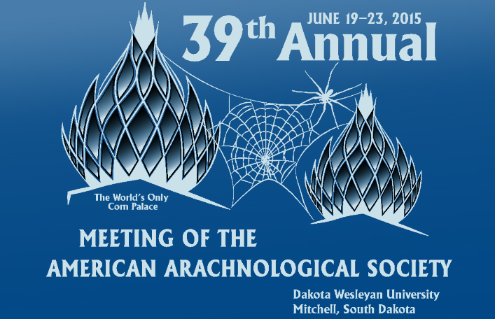
The Dakota Discovery Museum, where we gathered on arrival; sadly no photos were allowed in the museum's galleries 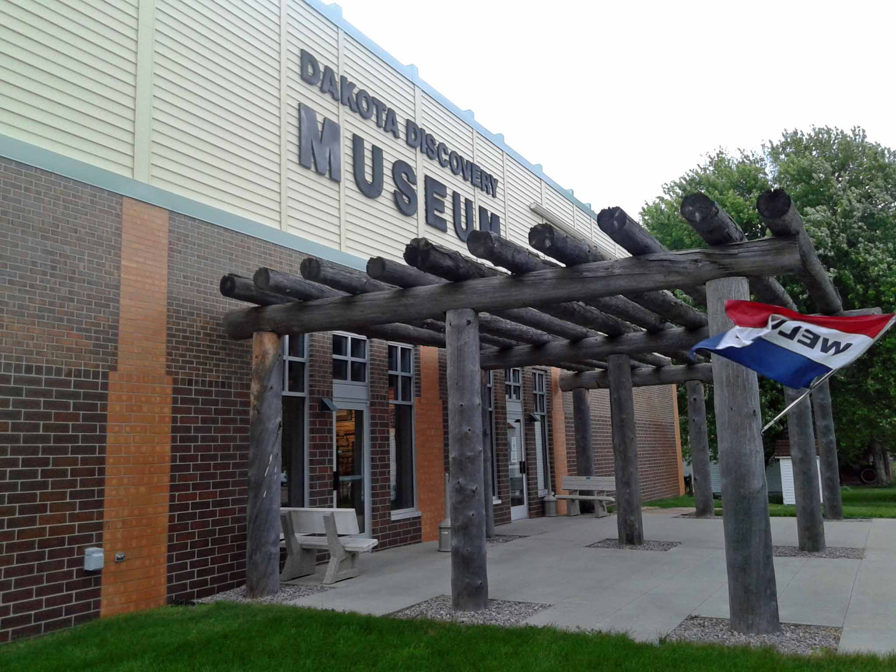 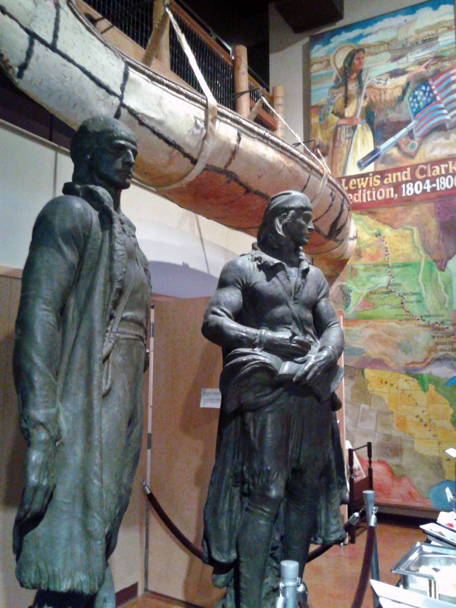 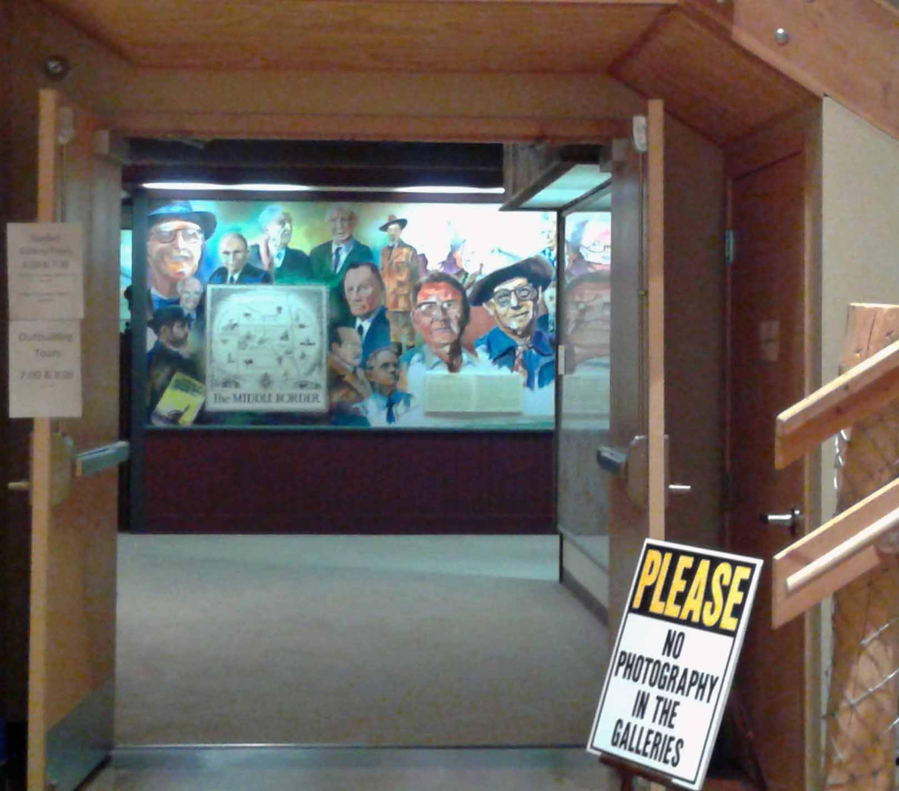
Cricket-flour chips at #arachnids15! 
Mmm bacon candied jalapeño for the cricket flour chips #arachnids15 yum 
Saturday, June 20
About to get started! 39th annual meeting of the American Arachnological Society June 19–23, 2015
Opening remarks by Dakota Wesleyan Dr. Rocky Von Eye #arachnids15 she's a statistician, but not afraid of spiders. Yay!
The campus of Dakota Wesleyan has at least three fountains 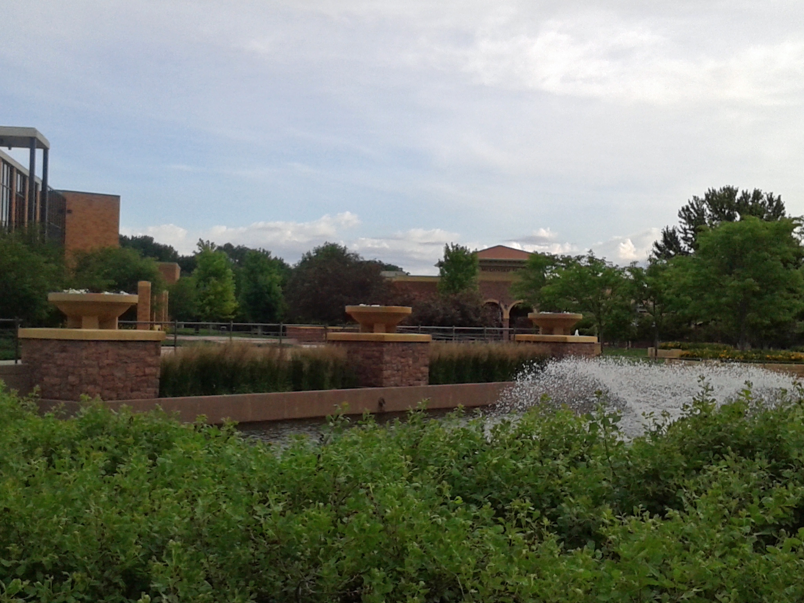
The first session will be Systematics & Evolution (Part 1) #arachnids15 moderator Hanna Wood
Dear friends & colleagues, please join in with comments - & questions for the speakers - at #arachnids15
First up: Lauren Esposito on systematics of #scorpions in buthid subfamily Rhopalurusinae
Esposito: New World buthids are monophyletic; also v venomous, 1-k deaths/year
Esposito: the stridulating club-tailed #scorpions Rhopalurus had differences in the stridulatory mechanism; 2 have lost it
Esposito: date of separation of N/S America from Antilles = 35.6my; matches a proposed land bridge GAARlandia
Next: James Starrett, with a revision of the #opilionid genus Cryptomaster
Starrett: Short-range endemism is a major focus of Marshall Hedin's lab
Starrett: Sampling in Oregon. Mitochondrial locus showed a deep genetic break along geographic lines
Starrett: ... within Cryptomaster leviathan, despite v similar male reproductive anatomy
Starrett: male reproductive anatomy may underestimate species divergence in arachnids
Side picked! Spiders are fab! ;-) RT Mike Primavera @primawesome I don't trust you if you aren't scared of spiders. Pick a side.
Next: Sam Evans with a genome-wide phylogeny of the jumping spiders, family Salticidae
Evans: Trying to shore up the backbone of Maddison et al. 2014 phylogenetic tree
Evans: don't need to design primers since probe kit for spiders exists (Hamilton et al.)
Evans: results v close to 2014 tree; a different basal salticid tho; Saltafresia are a clade
Next: Bob Kallal gives a preliminary look at his revision of the Australian leaf-curling orb-weavers Phonognatha & Deliochus
Kallal: Phonognatha mostly found on east coast, possibly an artifact of collection; some spp in New Caledonia, 1 on west coast
Kallal: Prefer leaves but esp in urban environment will use shells, newspapers, cig butts etc. Male lives in retreat w female
Kallal: Originally they were placed with the nephilines, due to leaving the non-sticky web spiral in place
Kallal: his work places them with zigiellines, along with Deliochus, with good support
Next: Marshall Hedin on the many putative cryptic species in a radiation of endemic Californian nemesiid mygalomorphs
Hedin: California nemesiids are not Brachythele & we consider them as belonging to genus Calisoga
Hedin: mtDNA barcoding returned rampant speciation; a pattern of allo/parapatry
Hedin: but there were was v little evidence of speciation morphologically, so looked at nuclear genes...
Hedin: which seemed to confirm multiple species; and in sympatry there was no evidence of gene flow
Last up: Wayne Maddison on the phylogenetic resolution of Habronattus jumping spiders using transcriptomes
Maddison: the 100 or so Habronattus species are notable for their complex & colourful courtship displays
Maddison: the Habronattus genome is about twice the size of the human genome, so used transcriptomes
Maddison: almost the same phylogeny was recovered with various subsets, with good robust support
Maddison: had some evidence of introgression in the clypeatus group, but a weak signal
After the break: Ecology with moderator Pamela Sobel-Thropp
First up in the Ecology session: Michael Draney on the apparent local extinction of a new population of a non-native spider
Draney: Clubiona pallidula is a Eurasian sac spider never before reported in the Great Lakes
Draney: C. pallidula was found in a 2002 survey of arthropods in the invasive common reed Phragmites
Draney: it was the most common spider found in the Phragmites (none found in the cattails sampling)
Draney: sampling Phragmites sites, incl original sites, in 2010. Found 1k spiders, 86 species
Draney: lycosids & tetragnathids were most common; linyphiids most diverse. Had 139 county records & 8 state records
Draney: Clubiona was v abundant, but found zero C. pallidula
Draney: the winter before we found C. pallidula was the warmest in Green Bay history; but it's known from Russian far north...
Draney: local extinctions of non-natives are probably quite common, but I couldn't find any examples in the literature
Next: Sarah Rose on short-term impacts of prescribed burning on the spider community in a small Ohio prairie
Rose: studies of spiders after grassland burns suggest short-term fall in diversity; but they're mostly sweepnet studies
Rose: we re-installed our traps the day after the burn; sampled 4 weeks pre-burn 6 six weeks post-burn
Rose: basically had v little difference in spider abundance & abundance in our pitfall traps pre- & post-burn
Rose: and we saw a variety of anecdotal evidence that some spiders actually survive the burn
Next: Kelton Welch with a presentation entitled The ecology of RNAi: what do spiders have to do with it?
Welch: ecological risk assessment: Hazard x Exposure = Ecologicial Risk; they use a tiered process
Welch: RNA interference "We're not just building a product that kills a bug, but one that messes with the genes of an animal"
Welch: "I coined the term RNA Armageddon, but I don't relly believe RNA is going to destroy the world"
Welch: Monsanto stresses that insects don't have RNA-dependent RNA polymerases, but spiders, ticks & mites DO have RdRp’s
Welch: used gut content analysis to see what arachnids had corn products in their guts & looked at their food-chain role
Next: Rick Vetter asks Do spiders transmit bacteria when they bite? The evidence suggests otherwise, he says
Vetter: "Spiders live in dirty icky places, eat dirty icky insects like flies who eat poop, right"
Vetter: some recent studies swabbing spider mouthparts have suggested bacteria transmission
Vetter: so he did some data mining across many studies of many spider bites, looking for any mention of infection
Vetter: presence of pus is actually considered a negative indication for a brown recluse bite
Vetter: in fact, there is research being done suggesting that spider venom KILLS bacteria
Next: Thomas Jones on boom-bust colony dynamics in the socially polymorphic theridiid spider Anelosimus studiosus
Jones: A. studiosus is an arboreal cobweb weaver common along waterways in the southeastern US
Jones: there is an advantage to being social in cooler climates & in smaller colonies; bigger groups compete for resources
Jones: using agent-based modeling to study the sociality threshold
Jones: colonies seem to be very sensitive to winter severity; larger colonies survive winter better
Jones: the populations are dynamic, with unpredictable boom & crash of colonies
And #arachnids15 will be back after lunch, with the first Behavior session
There are only 4 talks in the #arachnids15 afternoon session on Behavior, moderated by Michael Brewer. The next session is tomorrow morning
First up in Behavior: Shawn Wilder on how microcronutrient consumption by female Argiope bruennichi affects offspring survival
Wilder: I'm interested in sexual cannibalism & why do spidrs do it: sexual selection, competition, foraging?
Wilder: some studies have shown that females who cannibalize have more successful hatching & offspring survival
Wilder: some studies have shown that females who cannibalize have more successful hatching & offspring survival
Watching Wilder's stunning video of a female A. bruennichi starting on cannibalistic silk-wrapping even as male is still mating
Wilder: studies have shown that females won't eat the male if not hungry btw, even if he springs into her jaws (as some do)
Wilder: wanted to see if eating the male imparted essential nutrients to the female & her offspring
Wilder: wanted to see if eating the male imparted essential nutrients to the female & her offspring
Wilder: did not see big difference in lab betweem success of cannibals & non among A. bruennichi
Wilder: but micronutrients were important to females, so possibly males in the wild w a varied diet supply those
Next: Drew Hataway on submersion tolerance of the coastal dune-dwelling wolf spider Arctosa sanctaerosae
_Wilder: these spiders have their burrows periodically submerged in storm surges during hurricanes
_Wilder: they submerged 89 individuals for 4 hours, 94% were unresponsive, but 36% of those returned to activity
_Wilder: this is being called "hypoxic coma"
_Wilder: we've tried w forest lycosids like Pardosa etc & none of those survive drowning like shore-dwelling Arctosa
Next: Paula Cushing with a new species of myrmecophilic spiders from Big Bend, Texas
Cushing: this spider was collected near & inside nests of the seed harvesting ant Pogonomyrmex rugosus
Cushing: they mature in late summer; we don't know what family they belong in
Next, last talk of the day: Kerri Wrinn on the effects of autotomy on male-female interactions in Pholcus phalangioides
PS from Cushing: also found staphylinids & silverfish, both common myrmecophiles, in the ant nests
Back to Wrinn: cellar spiders are often nliving in close proximity to one another, often as male-female pairs
Wrinn: 47% of the spiders collected in cellars were in pairs; 18% were missing a leg; only 4.5% were in a pair & missing a leg
Watching Wrinn's video of P. phalangioides leg-tapping courtship, w successful mating & not so much (leg loss)
Wrinn: females missing a leg were more aggressive
Wrinn: but overall there were more positive interactions than negative in all pairings
Tomorrow at 9: 2nd Systematics & Evolution session ... followed by Taxonomy & Diversity, including {{quick horn toot}} my talk on LinEpig
Meanwhile, Mitchell's claim to fame - the Corn Palace. It has big outdoor murals made out of ears of corn, and has been a thing for many decades
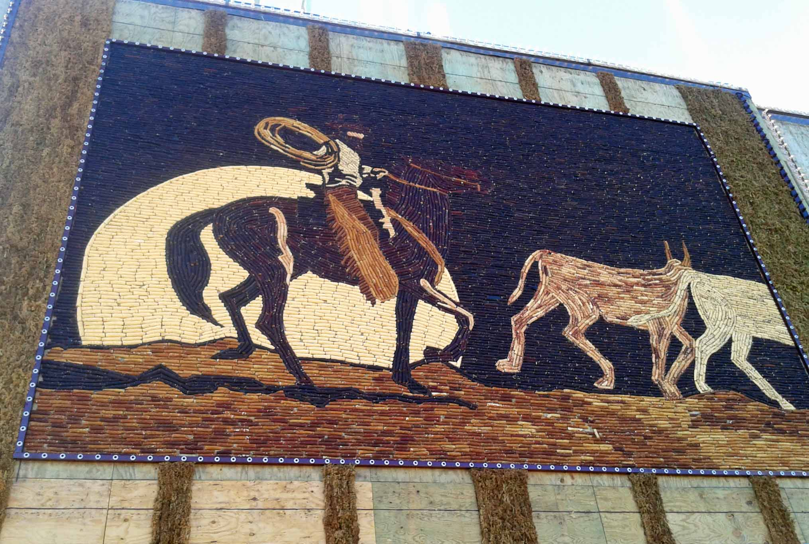
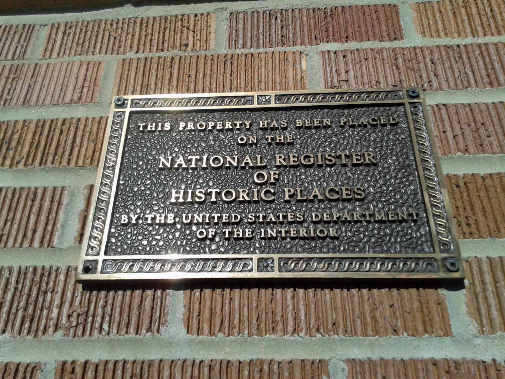
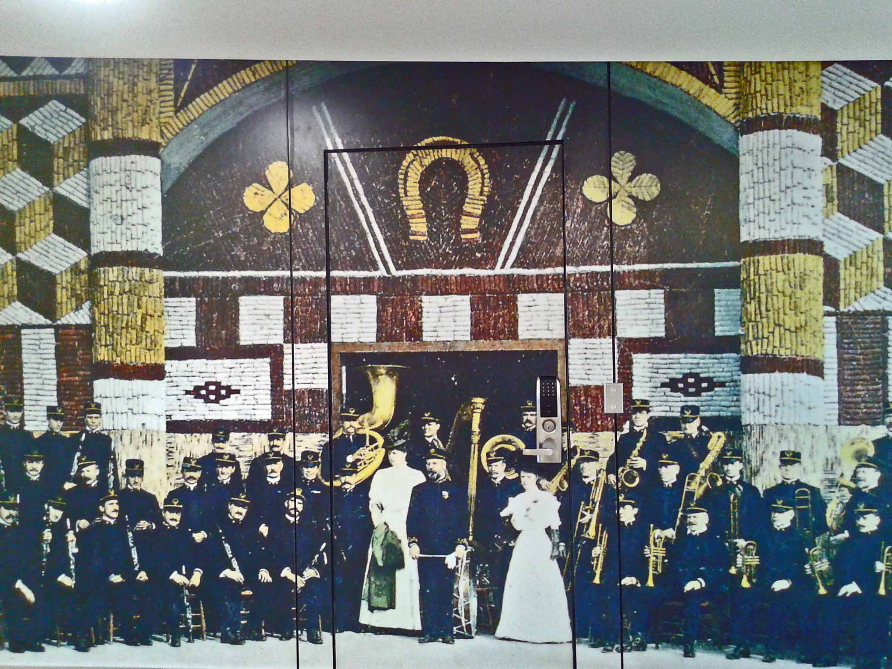
Mitchell is also home to the museum and library of George McGovern, the Democractic candidate who lost resoundingly to Richard Nixon in the 1972 presidential election. Here is a photo of the senator with someone who did end up serving as president
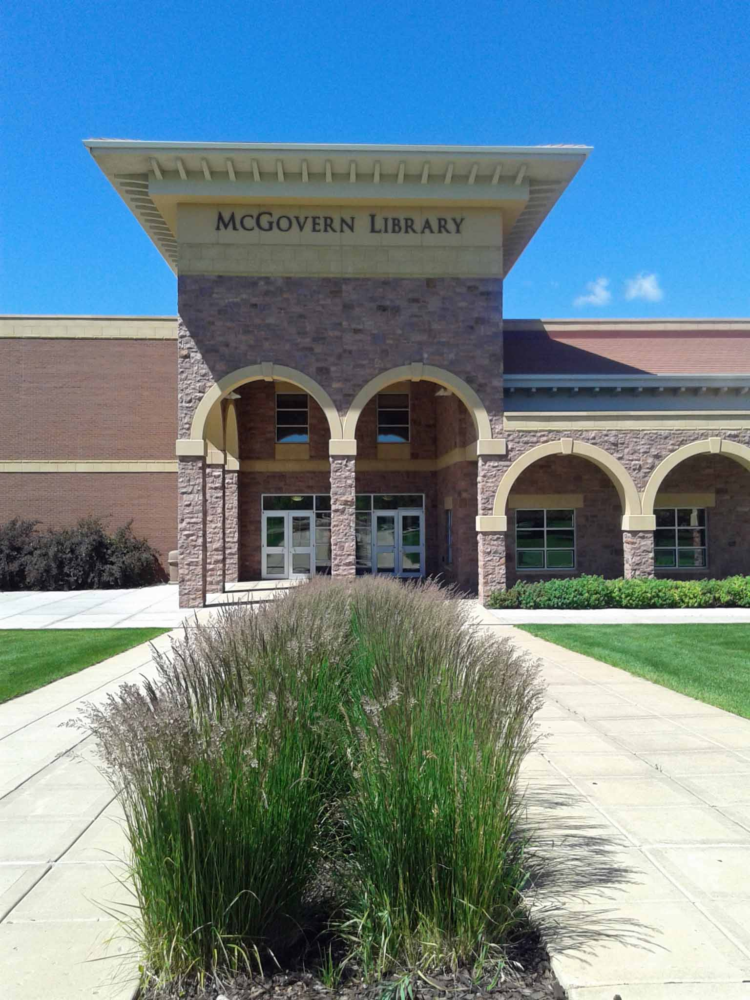
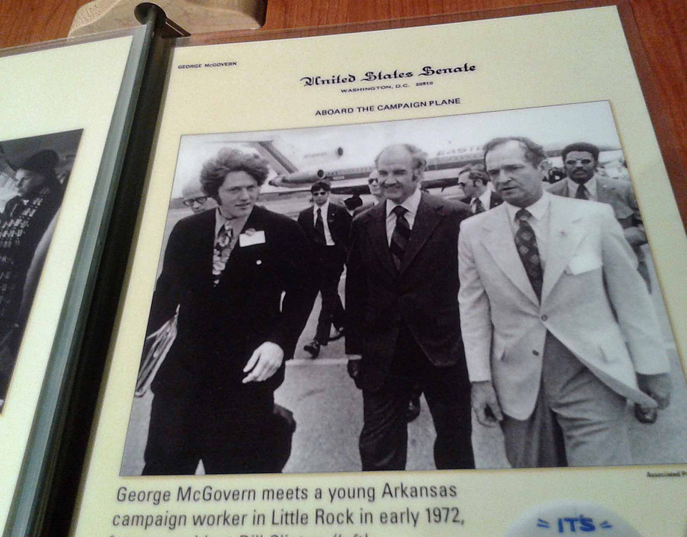
Sunday, June 21
Good morning, #arachnids15 is back in session, with part 2 of Systenatics & Evolution, moderated by Michael Draney
First up: Hannah Wood with Need for speed: extremely rapid predatory strikes evolved repeatedly in trap-jaw spiders
Wood: spiders in Mecysmaucheniidae have domed heads & greatly modified long chelicerae, which snap together at great speeds
Wood: it's hard for small organisms to make fast movements; a compensating mechanism is "power amplification"
Wood: photographed the jaw motion at speeds of 30,000 frames/second. We saw this video!
Wood: the fastest species attained peak speeds of 26.5 m/s in less than 0.18 milliseconds
Wood: the phylogeny showed the power morphology to do this evolved 4 separate times
Wood: this is the 1st discovery in arachnids of power amplification mechanisms
Next up: Paul Selden on ancient spiders in salt lakes
Selden: the Green River formation is the largest great lake formation in the fossil record; the biota is v diverse
Selden: until recently, only a single specimen (Linyphia byrami Cockerell, 1925) had been described
Selden: now spiders from the families Uloboridae, Hersiliidae, Selenopidae & Thomisidae described
Selden: also seeing some spider fossils from the Florissant formation & Crato in Brazil
Selden: in Crato spider fossils have legs curled up, like "dead on the carpet"
Selden: spider fossils from the other 2 places have legs stretched out like they died on the water
Selden: conjectured this reflected the level of salinity in the water; Crato also had fish mass die-offs
Selden: this was supported w some spider-drowning experiments in different salinity levels
Selden: thus fossil spider leg flexure can serve as a proxy for the paleosalinity of ancient lakes
Next: Michael Brewer on the potential dual roles of venom evolution in the genus Tetragnatha
Brewer: spider genomics is burgeoning. They have large genomes for arthropods, but they are hard to assemble
Brewer: so for looking at diversification in species radiation in Hawaii decided to use venom
Brewer: of 114 down-regulated genes, only 3 were homologous to known spider toxins (& they are known to be antimicrobial!)
Brewer: matched up transcriptomes w proteomes looking for venom dimorphisms... & mate recognition
Brewer: ... given the unusual mating behavior (cheliceral locking) in many tetragnathids
Next up: Ingi Agnarsson on CarBio, whichs aims to do comparative biogeography of two 'widespread species' in the Caribbean
Agnarsson: interested in developing & testing an index of dispersal ability over geo time among different taxa
Agnarsson: comparing dispersal events of Argiope argentata & Spintharus flavidus, & GAARlandia vs overwater hypothesis
Agnarsson: Argiope is widespread; Spintharus, the poorer disperser, represents an ancient & previously undocumented radiation
Next: Greta Binford on ancient colonization of N America via the Caribbean by recluse spiders & evidence for cryptic radiation
Binford: this is another Team CarBio project... There are 6 described Caribbean Loxosceles & 43 in N & Central America
Binford: Loxosceles is a mid-level disperser; oldest common ancestor lived in western Gondwana
Binford: Does monophyly of N Am + Caribbean hold up? Yes. Does radiation reflect geographic history?...
And that's it for Systematics & Evolution talks at #arachnids15 ... after the break, Taxonomy & Diversity. Stay tuned!
This is the #arachnids15 Taxonomy & Diversity session, moderated by Shawn Wilder
First up, Sandra Brantley on 4 families of spiders in adjacent conifer forest sites in northern New Mexico
Brantley: ... or how to get around frustrations in spider ecology
Brantley: worked at Valles Caldera National Preserve since 2011 & adjacent Bandelier National Monument for almost 20 years
Brantley: many species from Caldera I'd never collected from Bandelier, altho habitats are similar: mostly conifer 2500-2700m
Brantley: habitat specificity ranged from the greatest in Linyphiidae & Thomisidae, followed by Gnaphosidae
Brantley: longitudinally a lot of variation in abundance year to year in Bandolier, with rel low counts being common
Brantley: discussion of the value of databases in such work; they use SCAN, which has useful mapping functions
Brantley: can use the data for niche modeling together with climate data & identify what will be suitable-habitat predictions
Brantley: so get your specimens databased "Let us work to overcome the phrase 'Known only from the type locality'!"
Binford: & we see different genetic structure across short geo distances among cave populations
Binford: taxa within Caribbean islands are not monophyletic... but 28 mya Cuba was a series of different islands
Next: Mia Spaid on spiders of the Everglades National Park: changes in species composition
Spaid: the Everglades is right on the border of biogeographic areas; they looked at 4 habitats
Spaid: the Everglades are much reduced from their original extent, & w v different water flow due to diverting by man
Spaid: was able to use the Jim Berry collection from the late 1960s, & compare to recently collected material
Spaid: hardwood hammock habitat was the most diverse, followed by pinelands, then sawgrass, & willowhead last
Spaid: the greater diversity in 2000 vs 1960s may be largely accounted for by collection differences
Spaid: faunal-community structure was v different between the 2 collection periods & among the 4 habitats
Next: Marc Milne with a new species of Liocranoides (Tengellidae) from Alabama
Milne: this study began, like so many do, with rumors of rare spiders, in some cave
Milne: Anvil Cave is a "maze cave" w almost 13 miles of passageways; entrance reached via canoe trip
Milne: Ingram Cave is just a hole in the ground, which opens up into a big room
Milne: saw some troglobitic fauna, altho did not find the rumored rare spiders, but ...
Milne: discovered a cohabiting male & female Liocranoides in Ingram Cave
Milne: Liocranoides Keyserling 1881, btw, contains 5 species of mostly cave-dwelling, medium-sized spiders
The last presentation of this session will be my talk on LinEpig & online taxonomic reference resources...
We're about to start the 2nd Behavior session at #arachnids15, moderated by Kelton Welch
First up, Jonathan Coddington, a last-minute addition to the lineup because the planned talk by George Uetz fell through
Jon Coddington is talking about the biodiversity of life on Earth. He leads the Global Genome Initiative #arachnic
Coddington: Remember there is really only one genome
Coddington: "For protein-coded genes, we are only about 50% different from a banana"
Coddington: There are about 10,000 total families of life on earth
Coddington: the best-known families of life on earth, based on online data, are plants & a minnow family
Coddington: ... and just lots of interesting info from the Global Genome Biodiverstiy Network
Next: Rachael Mallis on the courtship in Tengella perfuga, w all that strumming, stroking & stilting
Mallis: male courtship - preening & grooming, abdomen shaking, stroking, & "stilting" up on his long legs & silking over her
Mallis: the deed itself is v quick - and then you get a big egg sac w "a thousand babies"
Btw, in Mallis' video, the male's stroking was v focused, & the female proved quite eager
Next: Colton Watts on diel patterns of courtship in the subsocial spider Anelosimus studiosus...
Watts: ...& how they may not be driven by female aggression
Watts: A. studiosus males prefer to court docile females; & females have diel patterns of aggression
Watts: used half-light to mimic dawn & dusk; looked at females from single-female & multi-female webs separately
Watts: male courtship did vary w time of day, but only w females from multi-female webs
Watts: clock shifted females from multi-female webs were less aggressive toward prey at dusk
Watts: but males treated clock-shifted females differently than clock-normal females
Watts: those females were more aggressive; clock-shifting can have a wholesale effect on behavior
Watts: clock-shifting probably really stresses them out, so what we had was jet-lagged spiders
Next: Anne Danielson-Francois with evidence for sexual selection on spider fangs and behavioral cost
Danielson-Francois: males of the long-jawed orb-weaver Tetragnatha elongata live about as long as females do & eat
Danielson-Francois: but the male's chelicerae & fangs are subtly but definitely different from female's
Danielson-Francois: is natural or sexual selection fashioning the more delicate but longer fangs of the males?
Danielson-Francois: 24-hr fly-catching efficiency is lower for adult T. elongatga males than for females
Danielson-Francois: after mating, males like to steal the female's food item
That was the last talk #arachnids15 of the day. After thebreak, we will go to the poster session
Monday, June 22
Good morning from #arachnids15. Getting a late start, as a storm knocked out Internet here...
This session is Webs & Silk, moderated by Sandra Brantley
1st: Brent Opell on evolutionary & environmental plasticity in the material properties of orb-weaving spider glue droplets
Opell: Glue droplets in web viscous capture thread differ in hygroscopicity, adapting to habitat humidity
Opell: glycoprotein material properties can vary 630-fold in toughness across the 3 species studied
Opell: and can vary 2- or 3-fold within a species depending on the ambient humidity
Next: Sean Blamires on property variation in spider silks: ecology, evolution & biomimic implications
Blamires: major ampullate silk aka dragline silk is the spider silk studied for its high strength properties
Blamires: silk production sequence step 1 protein secrection; protein mix determines strenght vs extensibility
Blamires: post-secretion step 2 = crystalline structure
Blamires: step 3 involves effect of exposure to water (humidity) & wind
Blamires: amorphous alignment had the greatest influence on material properties of the silk
Next up: Sarah Stellwagen on intra-orb-web capture spiral adhesive droplet distributions
Stellwagen: a triad of spigots on the posterior lateral spinneret make the sticky threads in an orb web
Stellwagen: Brent Opell had noticed a difference in stickiness between top & bottom as well as outside vs. inside of webs
Stellwagen: collected fresh webs in the morning to measure properties of droplets from different parts of the web
Stellwagen: as in Brent's work, I use angle formed when pulling on droplet to calculate Young's Modulus (measure of toughness)
Stellwagen: spiders run down in the web more easily than up, & they fill in the bottom first
Stellwagen: droplets at the bottom of the web are larger & extend for twice the length of time in the lab
Stellwagen: there is a 44% difference in toughness of the droplets between v top & v bottom of the same web
Next: Milan Rezá c asks, Do the proportions of the spinning duct influence the material properties of major ampullate fibers?
Rezá c: the toughest dragline silk known is produced by the orb weaver Caeostris darwini from Madagscar
Rezá c: the spinning duct has an S-shaped curve; silk passing thru it is elongated by shear forces
Rezá c: comparing stress-strain curves & length/width measures of each leg of the duct in several species...
Rezá c: we found counsiderable variation between species in the length of the loop or curve of the duct
Rezá c: toughness significantly correlated w duct width
Rezá c: duct length increase out of proportion to spider body size across species
Rezá c: larger spiders produce stronger & tougher fibers, likely due to the elongation of spinning ducts
That was it for this year's scientific talks
Now Paula Cushing talks about the 2016 ISA/AAS joint meeting in Golden, Colorado
Cushing: Golden is a cute little town about 40 min from Denver Intl Airport
Cushing: Ingi Arnarsson & Linda Rayor are organizing the program; they're organizing symposia
Cushing: the meeting will be at the School of Mines (NOT "mimes")
Cushing: expecting ~350 attendees, & planning 2 concurrent tracks
Cushing: meeting will be July 2nd to the 9th, w BBQ & fireworks for the Fourth
Cushing: planning lots of fun & beautiful excursions & things to do...
Cushing: (btw, the International Society of Arachnology http://www.arachnology.org/ - has its congress every 3rd year)
Cushing: registration will be $300-$350 per member (a bit more than usual bec it's the Intl); but dorms will be v cheap)
After the #arachnids15 banquet, we had the annual & auction raised $1,103 for arachnology student research
This cute but baffling alleged spider, for example, went for $7 to Laurén Fogg at the #arachnids15 auction
@sc_evans: Last item: shirt stolen off Marshal Hedin's back just last night. Sold for $57. #arachnids15 #thatMarshalScent 
@sc_evans: The famed shirt, now proudly owned by Greta Binford. (right, w/ @nsandlin) 
In the #arachnids15 student competition, Robert Kallal won 2nd place for his talk on systematics of the Australian leaf- curling spider
Sarah Stellwagen was the #arachnids15 student competition winner w her talk on top-vs-bottem differences in web silk adhesion
High schooler Jihoo Kim beat out college students with his winning #arachnids15 poster on Dysdera crocata not limiting its diet to pill bugs
Congratulations #arachnids15 student competition winners!
#arachnids15 poster competition winner Jihoo Kim is working on the arthropod collection at the @fieldmuseum this summer
Tuesday, June 23 and beyond
Ready for the field trip. On the way, we had to wait for a passing house. In South Dakota, you see whole lots full of houses ready to take to the road
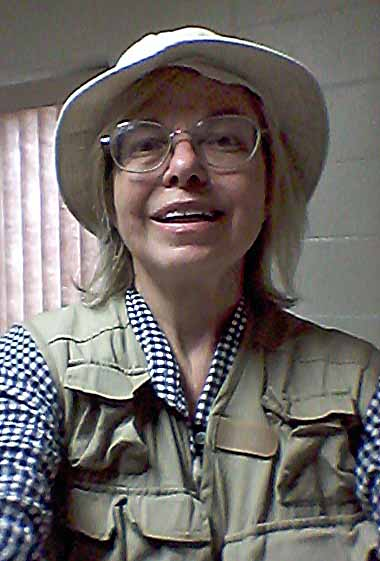
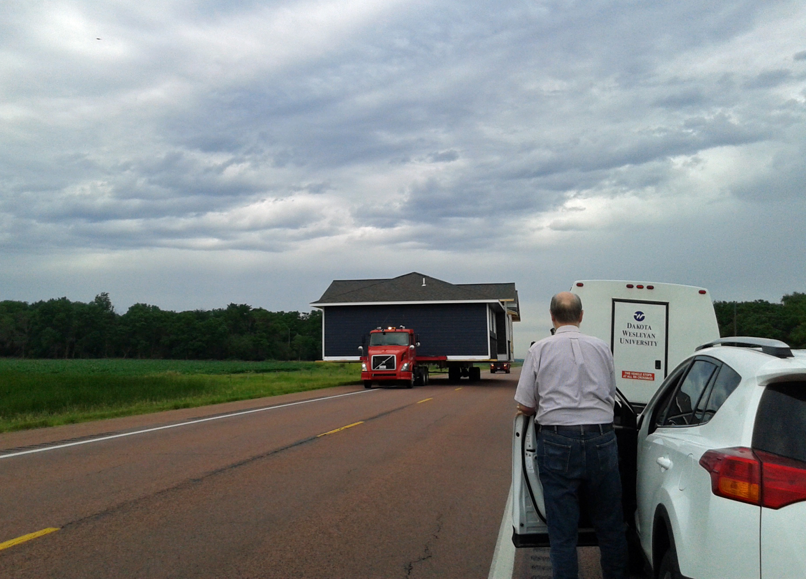
The field trip was at the Madison Waterfowl Production area. Here are some fauna and other things to be aware of out there
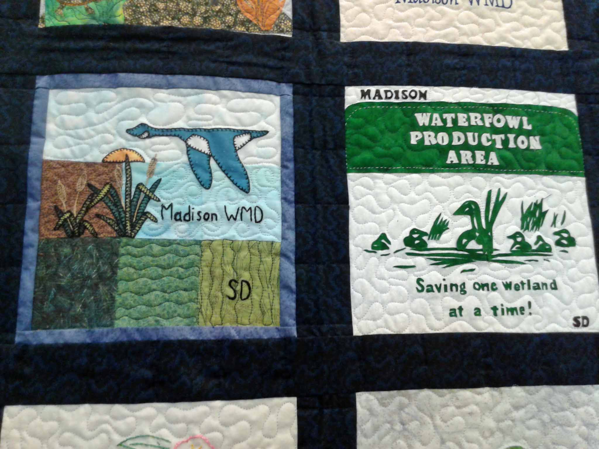
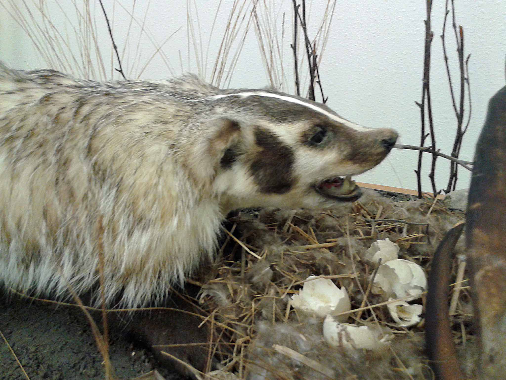
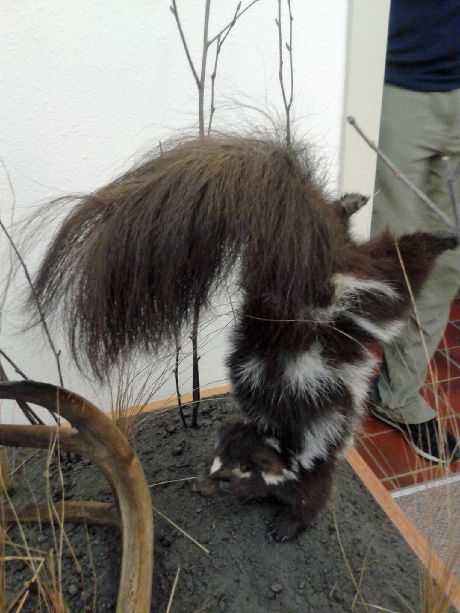
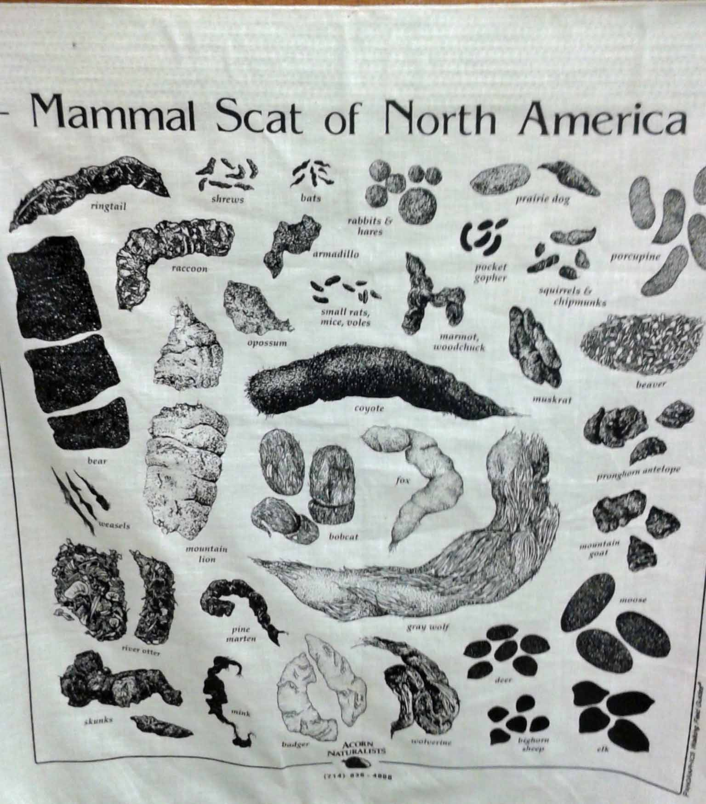
It was a lovely spot w a native prairie
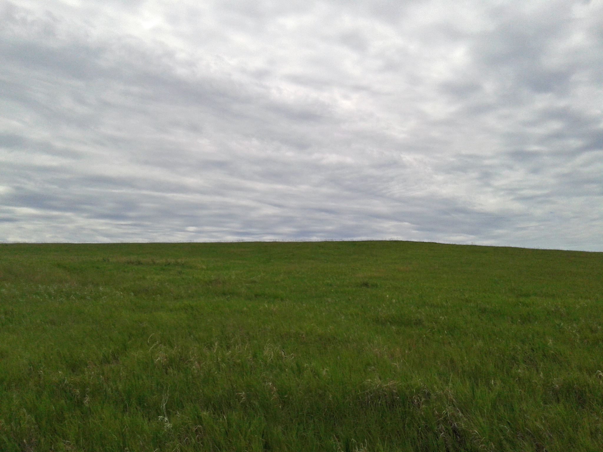

One thing we saw in the prairie was some thriving ant nests. Here is how to spot them
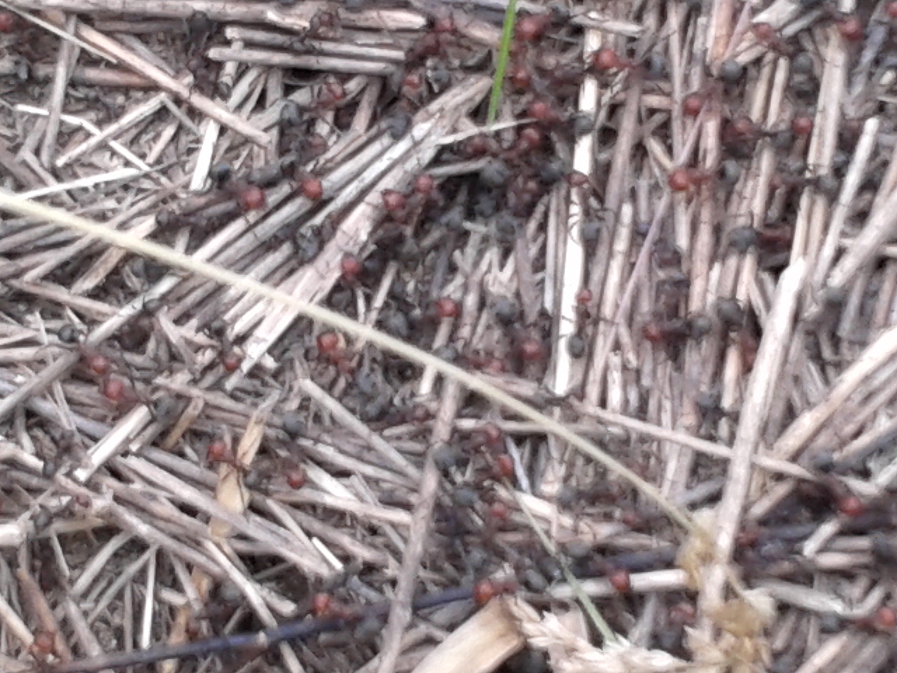
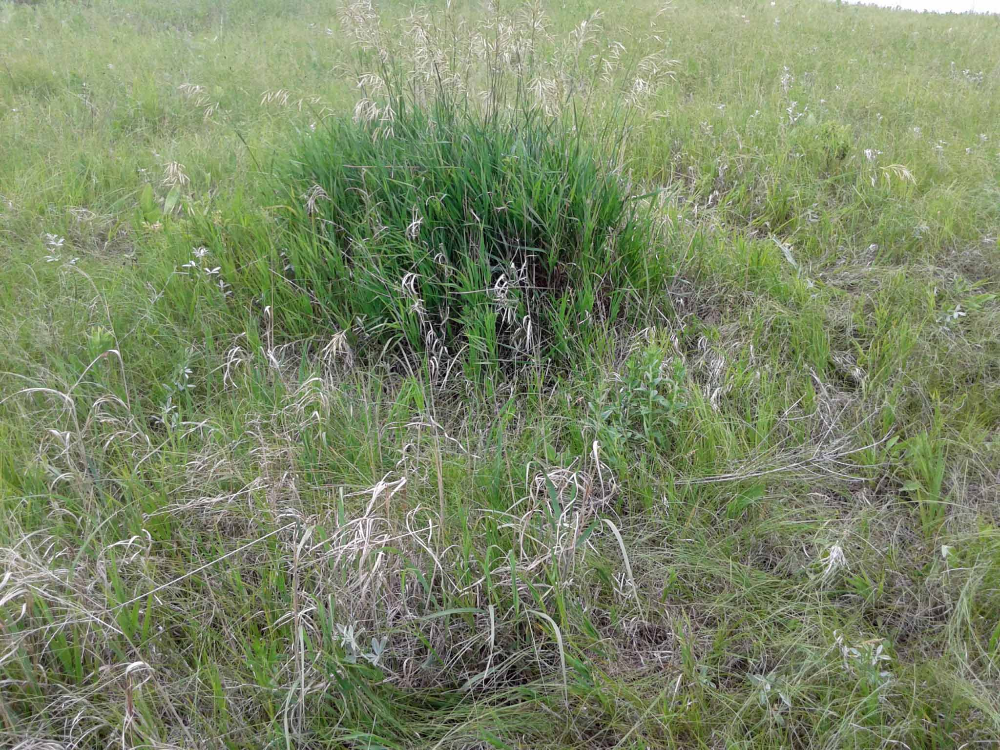
@sc_evans: Rounding up tidbits from #arachnids15. Cool clouds on the drive in from Sioux Falls:


@sc_evans: Mitchell is a classic hokey American town. World's only corn palace (read: corn gymnasium) 
RT Sam Evans @sc_evans My collab @8legs2fangs saw @nsandlin's LT of my talk, emailed me in SAME SESSION w/ new insights. #arachnids15 + Twitter = progress!
About this document
By giving multiple highlights from almost all speakers, I have exceeded the size that can readily be handled by the Storify platform, which I had used in earlier years. This is thus a custom-gathered collection of tweets; those not identified are by me. I have taken the liberty of tidying the content by correcting misspellings and filling in some missing information. If any errors or ommissions remain, please let me know and I will set them right. My contact info is here. I also added a few images that never got tweeted.